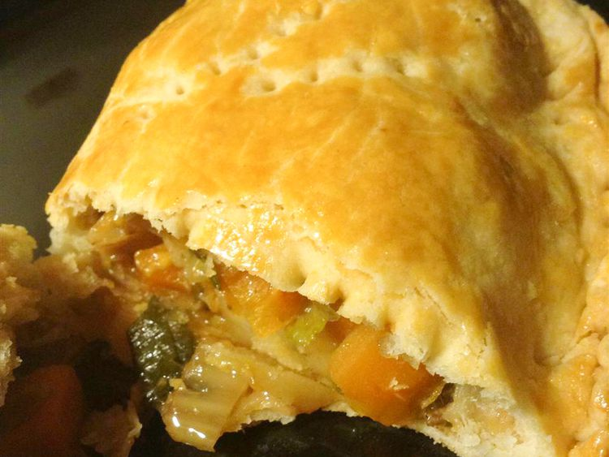

Pasties

Pasties are traditional meat pies hailing from the Upper Peninsula of
Michigan! These are made with rutabaga so they're the real deal. Rub
pasties with a little milk before baking if you want them to have a
golden color.
Ingredients
Dough:
- 3 ½ cups all-purpose flour, sifted
- 1 ½ teaspoons salt
- 1 cup shortening
- 1 cup cold water
Filling:
-
1 pound boneless round or chuck steak, cut into 1-inch cubes
- 2 medium potatoes, peeled and cubed
- 1 medium onion, chopped
- 1 medium carrot, diced (Optional)
- ½ cup cubed rutabaga
- salt and pepper to taste
- 6 tablespoons margarine
Directions
-
Make the dough: Combine flour and salt in a large bowl. Cut in
shortening until mixture resembles coarse crumbs. Stir in water until
dough comes together. Shape into a ball, wrap in plastic, and
refrigerate for 30 minutes.
-
Preheat the oven to 350 degrees F (175 degrees C). Line a baking sheet
with parchment paper.
-
Make the filling: Mix meat, potatoes, onion, carrot, rutabaga, salt,
and pepper in a bowl until well combined.
-
Remove dough from the refrigerator and divide into six pieces. Shape
pieces into balls, then roll into 6-inch diameter rounds on a lightly
floured surface. Spread about 1 cup filling over half of each round
and dot with 1 tablespoon margarine. Fold uncovered pastry up and over
filling; crimp edges to seal. Prick with a fork and place onto the
prepared baking sheet.
- Bake in the preheated oven for 1 hour.